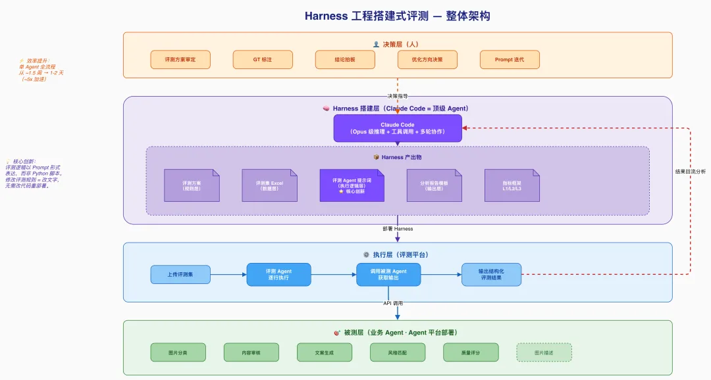
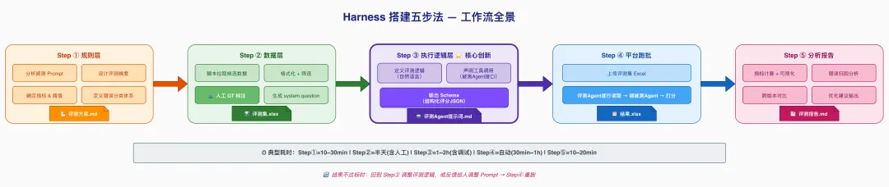
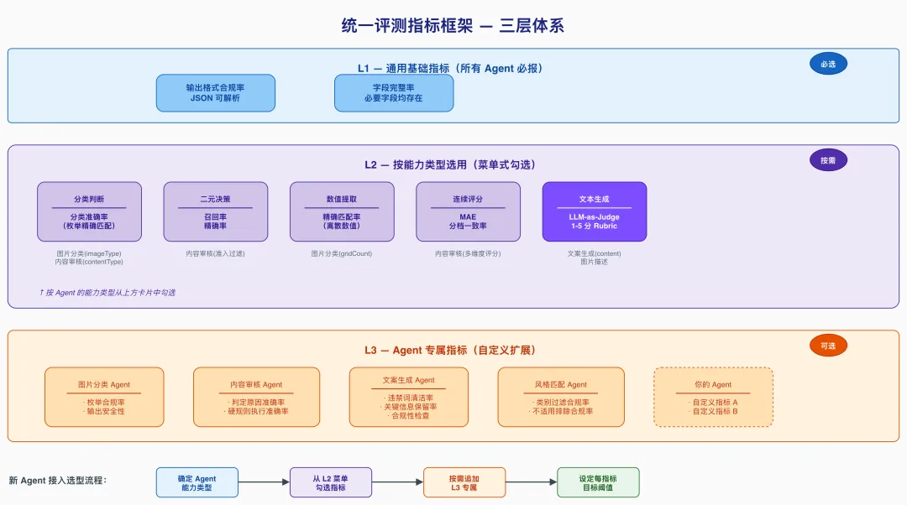
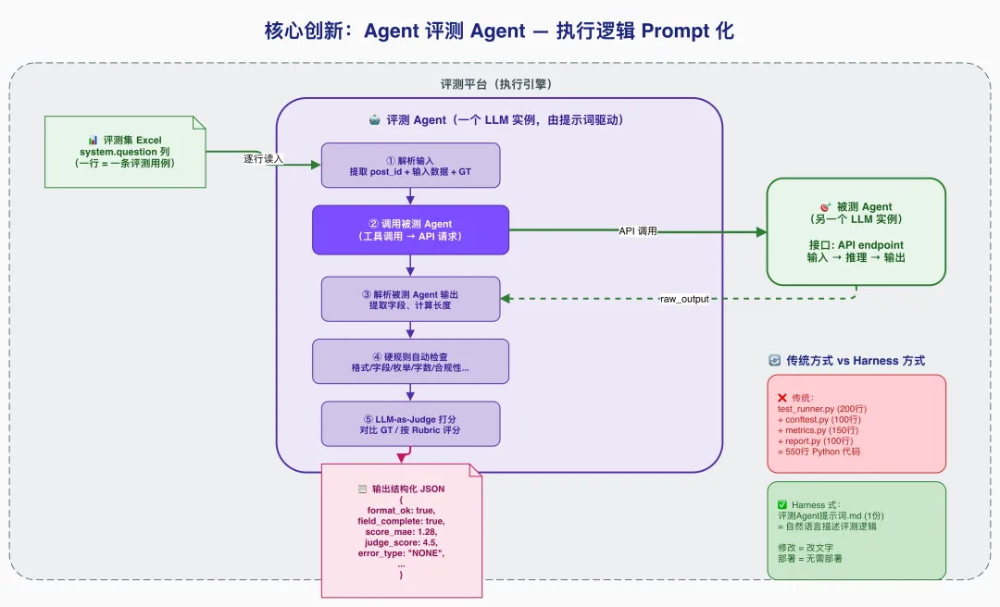
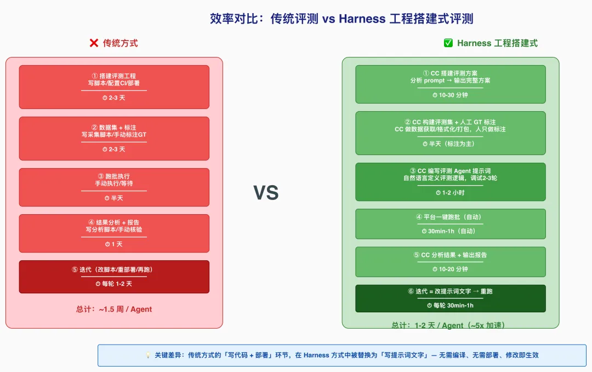

阿里妹导读
用一个强 Agent 构建评测 Harness，系统性评测一群业务 Agent（文章内容基于作者个人技术实践与独立思考，旨在分享经验，仅代表个人观点。）
Agent 搭建评测 Harness 的完整方案
用一个强 Agent 构建评测 Harness，系统性评测一群业务 Agent（文章内容基于作者个人技术实践与独立思考，旨在分享经验，仅代表个人观点。）
某业务系统的内容生成链路由多个子 Agent 协作完成，每个 Agent 负责不同的任务（图片理解、内容审核、文案生成、风格匹配等）。这些 Agent 的 prompt 方案频繁迭代，每次变更后需要快速验证效果。
核心矛盾：业务 Agent 迭代快（天级），但传统评测工程搭建慢（周级）。
痛点 | 表现 |
启动成本高 | 搭建评测工程、写脚本、部署服务，还没开始评就花了一周 |
人力密集 | 标注数据集、写分析脚本、出报告，每个环节都需人工介入 |
迭代慢 | prompt 改了一行，想看效果要等半天重新跑 |
可复现性差 | 评测逻辑散落在各种脚本和 Notebook 里 |
指标不统一 | 不同 Agent 各搞一套，无法横向对比 |
工程化沉重 | 每换一个 Agent 就要新写一套评测代码 |
核心思路：用一个顶级 Agent（Claude Code）作为 Harness 工程的搭建者和运行者，系统性地对业务 Agent 进行评测。
传统做法：人写评测代码 → 跑脚本 → 看结果 → 改代码 → 再跑
Harness 式做法：顶级 Agent 搭建完整的评测骨架（harness），包括评测方案、数据集、评测逻辑（以 Agent 提示词形式表达）、分析流程。人只需提供被测对象和做关键决策。
能力 | 在 Harness 中的作用 |
深度理解 prompt | 分析被测 Agent 的逻辑，设计针对性评测维度 |
代码生成 | 数据获取/处理脚本，评测辅助工具 |
结构化输出 | 评测方案文档、评测 Agent 提示词、评测报告 |
多轮协作 | 跨版本持续迭代（v1→v2→v3），保持上下文连贯 |
数据分析 | 对跑批结果做统计、归因、对比 |
关键洞察：评测 Harness 的本质是一套结构化的评估规则 + 执行流程。传统做法把它编码为 Python 脚本，而我们把它编码为 Agent 提示词——更灵活、更可读、更易迭代。


传统评测工程 | Harness 式评测 | 变化 |
| 评测方案 .md | 规则从配置文件变为自然语言文档 |
| 评测集 Excel（system.question） | 数据格式统一，人可直接看懂 |
| 评测 Agent 提示词（数千字） | 执行逻辑从代码变为 Prompt |
| GT 标注 + ground_truth 字段 | 预期结果内嵌在数据中 |
| CC 实时分析 | 报告生成从脚本变为交互 |
| 评测平台一键跑批 | 零部署成本 |
角色 | 职责 | 不做什么 |
人 | GT 标注、方案审核、最终决策 | 不写评测脚本、不手动计算指标 |
Claude Code | Harness 全链路搭建 + 结果分析 | 不做批量推理主循环（交给平台） |
评测平台 | 批量执行引擎（逐行调用） | 不做方案设计和指标汇总 |

在评测 6 个不同类型的 Agent 后，我们沉淀了一套通用的三层指标框架：
L1：通用基础指标（所有 Agent 必报）
指标 | 含义 | 为什么重要 |
输出格式合规率 | JSON 可成功解析的比例 | 下游消费方直接报错 |
字段完整率 | 必要字段均存在的比例 | 缺字段 = 功能不可用 |
L2：按能力类型选用（从菜单中按需勾选）
能力类型 | 指标 | 适用场景 |
分类判断 | 分类准确率 | 枚举值选择（如类型判断） |
二元决策 | 召回率 / 精确率 | 过滤 / 准入决策 |
数值提取 | 精确匹配率 | 离散数值的精确提取 |
连续评分 | MAE + 分档一致率 | 内容质量打分 |
文本生成 | LLM-as-Judge 1-5 分 | 文案、描述等开放式输出 |
L3：Agent 专属指标（按需自定义）
每个 Agent 可在 L1+L2 基础上追加专有指标。例如：
●文案生成 Agent：违禁词清洁率、关键信息保留率
●风格匹配 Agent：不适用风格过滤合规率
确定 Agent 涉及的能力类型↓从 L2 菜单勾选对应指标↓按需追加 L3 专属指标↓设定每个指标的目标阈值
输入：被测 Agent 的 prompt 文件 + 业务上下文描述
CC 输出：
●完整的评测方案文档（含维度、指标、阈值、数据集要求、错误分类体系）
●边界用例建议（CC 分析 prompt 逻辑后主动提出应覆盖的场景）
实际效果：从一个 prompt 文件到一份完整评测方案，大约 10 分钟的交互。
示例对话：
人：这是新的内容审核 Agent 的 prompt，帮我设计评测方案CC：[分析 prompt] 我建议从以下维度评测：1. 格式合规（JSON可解析 + 字段完整）2. 过滤决策（召回率/精确率）3. 评分准确性（MAE + 分档一致率）需要覆盖的边界：少量输入/全过滤/极端分数...目标阈值建议：过滤精确率≥90%，MAE≤3...人：某个维度容易低估，阈值放宽到 MAE≤5CC：好的，已更新。[输出完整方案文档]
CC 做的事：
1.数据获取：编写脚本调用业务接口，批量拉取候选数据
2.数据处理：格式化为评测所需的 JSON 结构
3.GT 辅助标注：对分类型指标，CC 先给建议标注，人工复核
4.评测集打包：生成评测平台可直接消费的 Excel（含 system.question 列）
关键设计：system.question 列
每行数据都有一个system.question列，格式为 JSON，包含：
●被测 Agent 所需的全部输入字段
●ground_truth（人工标注的黄金答案）
评测 Agent 读取这一列即可获得输入和预期输出，无需额外配置。
{"sample_id": 243,"title": "XX品牌零食合集...","content": "最近发现了...","items": [...],"ground_truth": {"should_filter": false,"total_score": 64,"dimension_a": 22,"dimension_b": 22,"dimension_c": 20}}
（CC 角色：Harness 工程师）

这是整套方案最核心的创新：把传统的评测脚本（Python/Java）替换为一份评测 Agent 提示词。评测逻辑从"代码"变为"自然语言指令"，一个 Agent 来评测另一个 Agent。
评测 Agent 的工作流程：
读取 system.question（一行数据）↓调用被测 Agent（获取实际输出）↓解析输出 → 硬规则自动检查 → LLM 打分↓输出结构化 JSON（所有指标的计算结果）
评测 Agent 提示词的结构模板：
#角色定义你是一个严谨的 AI 评测专家，负责对「XXX」Agent 进行单条样本评测。#工具声明-{agentId}：调用被测 Agent，传入 XXX，返回原始输出#约束1.必须先调用工具获取 Agent 输出，再评测2.最终只输出一个合法 JSON3.数值统计必须精确计算，不可估算#工作流程1.解析输入（提取 post_id、输入数据、ground_truth）2.调用被测 Agent3.解析输出为 JSON4.硬规则自动检查（格式/字段/枚举/字数/...）5.LLM-as-Judge 打分（对比 ground_truth 或按评分标准）6.错误归因（FORMAT_ERROR / WRONG_CHOICE / ...）7.输出最终 JSON#输出 Schema{完整的 JSON schema 定义}
优势 | 说明 |
逻辑可读 | 评测逻辑以自然语言写在提示词里，无需读代码 |
快速迭代 | 发现评测逻辑有误，改一段文字就行，不用改代码重部署 |
统一执行 | 所有 Agent 的评测逻辑结构一致，只改内容不改框架 |
评测即文档 | 提示词本身就是评测标准的完整说明 |
典型流程：
人：跑批完了，结果在 XXX.xlsx，帮我出报告CC：[读取 Excel]- 总量 50 条，API 成功 46 条- 格式合规率 92%- 过滤 Recall 100% / Precision 18.2% ❌- 核心问题：模型将评分维度误用为过滤条件- 建议：修复 prompt 中过滤逻辑的边界定义[输出完整报告 Markdown]
CC 在分析中的增值：
1.自动识别 pattern：不只报数字，还归因（"18 条误过滤中，12 条都是把某评分维度<60 当过滤条件"）
2.跨批次对比：和上一版结果对比，明确哪些指标进步/退步
3.给出可操作建议：不只是"分数低"，而是"建议在 prompt 第三段加入明确的过滤条件边界"
原则 | 说明 | 反例 |
小而精 | 20-55 条足够，覆盖所有边界场景 | 200+ 条但都是简单 case |
分布均衡 | 正/负例比例合理，边界场景必须有 | 全是正例，评不出问题 |
GT 可复核 | 每条 GT 标注有据可查 | GT 靠感觉打分 |
版本化管理 | 评测集跟随被测 prompt 版本变更 | 用 v1 评测集评 v3 prompt |
我们发现评测 Agent 本身也需要迭代（评测系统 bug ≠ 被测 Agent bug）：
常见评测系统 bug：
问题 | 表现 | 修复方式 |
匹配逻辑过严 | 语义等价的判定原因被判错 | GT⊆AI 超集匹配 |
硬编码规则误报 | 排除列表不全导致误判 | 改为动态语义比对 |
Token 截断 | 输出超长被评测平台截断 | 正则容错提取关键字段 |
GT 覆盖缺口 | 新增选项未在 GT 中体现 | 更新 GT 标注 |
迭代节奏：
●v1：基本逻辑跑通（调试模式，带推导过程）
●v2：切换为跑批模式（纯 JSON 输出），修复首批发现的评测逻辑 bug
●v3+：基于实际结果持续调优（指标定义、匹配方式、容错逻辑）
对文本生成类 Agent（无法精确匹配 GT），我们用 LLM 做评委：
做法：在评测 Agent 提示词中嵌入评分标准（1-5 分 rubric），评测 Agent 同时扮演"执行者"和"评委"。
有效的 rubric 设计：
5 分：改写自然，传达原文单一核心意图，一次读完即懂4 分：基本达标，有轻微瑕疵但整体可读3 分：勉强可接受，但存在轻度问题2 分：明显问题：信息压缩过度或照抄原文1 分：严重错误：与输入无关或完全无法理解
注意事项：
●每个分值必须有具体、可区分的判定标准
●避免"好/较好/一般"这类主观描述
●分值之间的差异应该一个正常人也能判断
评测平台→ 调用评测 Agent（一个 LLM 实例）→ 评测 Agent 通过工具调用被测 Agent（另一个 LLM 实例）→ 获得被测 Agent 的原始输出→ 评测 Agent 对输出进行多维度评分→ 返回结构化评测 JSON
实际踩坑：
坑 | 解法 |
评测 Agent 忘记调用工具 | 在 Constraints 中强调"必须先调用工具" |
工具参数传递失败 | 在提示词中显式写明参数构造逻辑 |
评测 Agent 重试耗尽 token | 添加"禁止重试"约束 |
输出截断 | 减少推导过程，只输出最终 JSON |

阶段 | 传统方式 | CC 协助 | 加速比 |
评测方案设计 | 1-2 天 | 10-30 分钟 | ~10x |
评测集构建 | 2-3 天 | 半天（含人工标注） | ~5x |
评测脚本/Agent 开发 | 2-3 天 | 1-2 小时 | ~10x |
跑批执行 | 同（平台执行） | 同 | 1x |
结果分析 + 报告 | 半天-1天 | 10-20 分钟 | ~5x |
单 Agent 全流程 | ~1.5 周 | ~1-2 天 | ~5x |
CC 方案不仅更快，分析质量往往更高：
●覆盖性：CC 不会遗漏任何数据行（人工数 50 行 Excel 容易看漏）
●一致性：同样的评测标准，CC 不会因为疲劳而评分漂移
●溯源性：每条评测结果都可追溯到 prompt 中的具体逻辑
●可复现：同一份评测 Agent 提示词 + 同一份评测集 = 结果可复现
场景 | 适合度 | 原因 |
Prompt 迭代验证 | ⭐⭐⭐⭐⭐ | 改 prompt → 跑批 → 看报告，闭环最快 |
多 Agent 横向对比 | ⭐⭐⭐⭐⭐ | 统一指标框架 + 相同评测流程 |
新 Agent 上线前验收 | ⭐⭐⭐⭐ | 系统性覆盖，不依赖人工抽检 |
线上问题复盘 | ⭐⭐⭐ | 可快速构造问题用例验证 |
局限 | 建议 |
LLM-as-Judge 本身有偏差 | 对关键决策用人工抽检兜底 |
评测集规模受限（人工 GT） | 小而精优于大而糙，20-55 条覆盖边界即可 |
依赖评测平台稳定性 | token 截断、API 超时需做容错 |
首次搭建有学习成本 | 第二个 Agent 起复用率很高 |
经过 6 个 Agent 的实战，已沉淀的可复用资产：
资产 | 说明 | 复用方式 |
三层指标框架模板 | L1/L2/L3 | 新 Agent 对照选用 |
评测方案文档模板 | 目标+维度+数据集+流程+错误分类 | 填空式生成 |
评测 Agent 提示词模板 | 角色+工具+约束+工作流+输出 schema | 替换业务逻辑即可 |
评测集 Excel 格式 | system.question 列规范 | 标准化接入评测平台 |
评测报告模板 | 执行情况+指标汇总+问题分析+建议 | CC 自动填充 |
错误分类体系 | FORMAT_ERROR/WRONG_CHOICE/... | 按需扩展 |
Agent 平台调用经验 | 接口格式/参数/踩坑记录 | 减少试错 |
想要复用这套方案的同学，按以下步骤操作：
●准备好被测 Agent 的 prompt 文件
●确认被测 Agent 的接口信息和调用方式
●在 Claude Code 中打开项目目录
告诉 CC：这是被测 Agent 的 prompt [粘贴/路径]，帮我设计评测方案。CC 会输出：维度、指标、阈值、数据集要求、错误分类。你来审核和调整。
告诉 CC：帮我从 XXX 接口拉取候选数据，格式化为评测集。CC 输出：候选数据 Excel。你来做 GT 标注（CC 可以先给 AI 建议，你复核）。CC 打包为带 system.question 列的最终评测集。
告诉 CC：基于评测方案，帮我写评测 Agent 的提示词。CC 输出：完整的评测 Agent System Prompt。上传到评测平台，用 1-2 条数据调试。根据调试结果让 CC 修改（通常需要 2-3 轮）。
上传评测集到平台 → 等待跑批完成。下载结果 Excel → 告诉 CC：帮我分析这份结果。CC 输出：完整评测报告 + 优化建议。
一句话：用一个强 Agent（Claude Code）搭建评测 Harness 工程，将评测逻辑从"代码"升级为"Prompt"，实现业务 Agent 的系统性快速评测。
范式转变：
传统：人写评测代码 → 跑脚本 → 人看结果 → 人改代码 → 再跑（周级启动，天级迭代）Harness式：CC搭建Harness → 平台跑批 → CC分析 → CC调整Harness → 再跑（天级启动，小时级迭代）
收益 | 具体表现 |
从周到天 | 单 Agent 评测全流程从 ~1.5 周压缩到 1-2 天 |
一人成军 | 一个人 + Claude Code 完成原来需要测试开发 + 数据标注 + 分析师的工作 |
可持续迭代 | 每次 prompt 变更后的验证成本极低（改提示词 → 重跑 → 看报告） |
零部署 | 评测逻辑是 Prompt 而非代码，无需 CI/CD，改完即生效 |
方法论沉淀 | 指标框架 + Agent 提示词模板 + 错误分类体系，可迁移复用到任何 Agent |
●任何有 Agent/LLM 应用、需要系统性评测能力的业务组
●Prompt 迭代频繁（天级/周级），需要快速验证效果
●多 Agent 协作系统，需要分模块独立评测
问题 | 思考 |
评测 Agent 自身的准确性如何保证？ | 调试期用 2-3 条数据人工核对；正式跑前先小批次验证 |
能否替代人工测试？ | 不能完全替代，但可以覆盖 80%+ 的重复劳动 |
与 Evals 框架（OpenAI）的关系？ | 理念类似，但我们的 Harness 更轻量、更灵活、无需工程部署 |
能否跨团队复用？ | 可以——三层指标框架 + 评测 Agent 模板 + 工作流模板，换被测对象即可 |
感谢对营销消费清单 AI 项目评测专项给予大力支持和鼓励的各位老师：
团队战友：岑坚、茉书、沈芃、飘飘、鲜佳伟等同学
协作兄弟：危素、朱八、墨謧、临汀、图兔、书屹、深空等同学